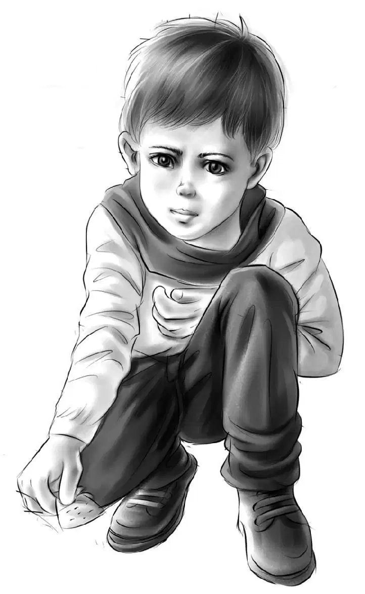
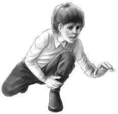
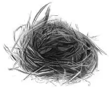
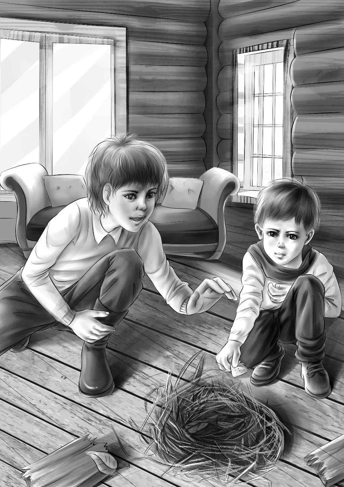

In about an hour the two Alden boys went out to wait for the pilot. They were not a minute too soon,for the pilot was early. Suddenly they heard the roar of the helicopter. It hovered right over them.
The pilot waved to them. First he dropped the bundle of sleeping bags. They were covered with plastic.
“They won’t get wet,” said Benny. “They landed better than the hay did.”
Both boys looked up at the pilot and waved their arms. Up and off went the helicopter.
The boys took in the plastic bundle. Henry found the snaps and took off the plastic cover. There were two big sleeping bags and one little one.
“How did Grandfather know Puggsy was so small？” asked Benny.
“Well,” answered Tom,“I must tell you that Mr. Alden telephoned me before you came to stay in the cabin. He asked me if somebody was always in the store. So of course I told him about my wife and Puggsy. I told him we lived over the store.”
“Here’s a long box,” said Jessie. She opened it and inside she found a small hammer,a box of nails,a box of tacks,two coils of wire,one heavy and one thin.
There was a message that read,
People snowed in sometimes need tools. Maybe the cabin needs repairs. Hope to see you soon. Love from Grandfather.
Jessie put the box of tools away and said,“You know we have never had time to pick out those nutmeats from the broken shells. Come on,let’s have a nut party.”
“And invite every nut we know！” said Benny.“Everyone is invited. Bring one of Grandfather’s sharp nails for a nutpick.”
Jessie put the cracked nuts on the table. The Aldens and the Nelsons sat around,picking out the nutmeats and throwing away the shells.
As they worked,Henry looked across the table at Jessie. He raised his eyebrows. Jessie understood. She nodded.
Then Henry began. “Tom,” he said,“I’m going to tell you something. We know you’ve been looking for something in this cabin.”
“That’s right！” said Puggsy.
Tom said slowly,“Yes,that is right.”
“Well,” said Jessie,“we don’t know what it is. And you don’t want to tell us. But we have found something.”
“Oh,what is it？”cried Barbara in great excitement.
For answer,Jessie looked at Benny. “Show them the broom closet that you found by the fireplace,” she said.
“There’s no broom closet,” said Tom,shaking his head.

“Look here,” said Benny,and he opened the closet door with his pocketknife. The Nelsons stared in surprise.
“We found some letters carved on the back of this door,” Benny went on. “But they don’t mean anything to us.”
Tom crossed the room almost in one jump. He took one look at the letters on the door and cried,“Barbara,it’s here！” Then his voice died away,and he added sadly,“No,it isn’t.”
The Aldens were really puzzled now. What could this mean？
Barbara saw how troubled they were. “I’ll tell you what it is and then you’ll understand. You know that Tom likes to bake more than anything else. His father and grandfather had a wonderful recipe for buns. No one has ever made buns just like them. The recipe was a family secret.”
Now Tom Nelson said,“My father used to put one special thing in his buns. It made them different.”
“Different from any buns in this world！” said Puggsy.
“Oh！”said Benny.“You know the whole story,Puggsy？”
“Yes,I do. If Daddy could find that one thing he could make buns and be rich！”
“Oh,Puggsy！” his mother said. Then she added,“But we think if Tom could make those good buns he might become famous...”
“I begin to see,” Jessie said. “But I still don’t know what those letters on the door mean—or why you are disappointed.”
“I’ll explain,” said Tom. “It’s the recipe for the buns written in a code. See that first line？ It begins‘One cup of milk.’I know all those ingredients. The one thing I don’t know is still missing. Do you see that question mark？ That’s what we’re looking for—the whole recipe without any question mark.”
“I still don’t know what all the letters mean,” said Violet.
“I’ll explain,” said Barbara. “They mean：
1 cup milk 1/4 cup water
1/4 cup butter 1 egg
1/4 teaspoon sugar ？
1 teaspoon salt 3 cups flour
1 yeast cake raisins
Bake at 400° for 15 minutes.”
“How simple！” said Violet. “When you know the secret.”
“They are easy buns,except for one ingredient,”Tom said. “But my father never told me what that one thing is. It has always been a family secret. He always put it in himself. He died before he told anyone.”
Benny thought a minute. He said,“Why do you think the secret is in this cabin？”
“A good question,Benny,”said Tom.“My grandfather built this cabin. And my father used to stay here before the Sportsmen’s Club bought it.When my father was dying he said the one word,cabin.”
“Was the ingredient something like vanilla or brown sugar？”asked Jessie.
“I’ve tried different things,” Tom answered. “But the buns don’t taste right. I don’t know any more than you do.” Then his face brightened and he said,“I know we could make those buns famous！”
Jessie watched his face and he smiled. She loved to see anyone who liked his work so much.
Tom went on,“First I would spend some moneyto advertise the buns. Then everyone who bought them would advertise them. They are delicious.”
“Isn’t it too bad that your father didn’t tell anybody,” said Benny. “If you do find it,be sure to tell somebody. And put a copy of the recipe in the bank,all sealed up.”
“Yes,Benny,you’re right. I have learned that lesson the hard way,” Tom said and looked sad again.
The family began to pick out nuts in earnest now. Soon they were all done. Jessie took the bowl to the kitchen end of the cabin and Henry put the empty shells in the fire.
Jessie broke the nuts with her fingers. Violet chopped the apples with a knife. They mixed the two with salad dressing. Then in the fireplace they cooked the hamburger that Mr. Alden had sent.
Puggsy was tired.“Where do I sleep？”he asked.
Jessie laughed. She said,“The couch makes a double bed for your father and mother. You can sleep in your sleeping bag on the floor right next to the fire.”
“You’re tough and the bag is soft,”said Benny.
Everyone was tired out,even Watch. After the dishes were done,they all went to bed and to sleep. Even the squirrels were quiet.

Henry’s and Benny’s watches ticked along,but everything else was quiet. At four o’clock in the morning,the wide,loose board in the ceiling of the boys’ room began to bend. It squeaked. Watch heard it,but Jessie had told him not to bark at the squirrels any more.
The big board bent some more and it squeaked some more.One end began to hang down. Still Watch did not bark. Slowly the board bent more and more. Then suddenly the other end broke and down crashed the board！
What a noise！ The board fell on the floor with a great bang. That was bad enough. But after it came the squirrels’ nest,five big fat squirrels,a bushel of nuts,and four feet of soft snow. It was the snow piling up below the hole in the roof that broke the board.
Everyone jumped out of bed,half awake. Now Watch couldn’t keep still. The five squirrels ran around wildly with Watch after them. Watch didn’t know which one to chase so he chased them all. They scolded and chattered and Watch barked and barked. What a terrific noise！
“What shall we do？” cried Jessie.
“I don’t know,” said Henry. Everyone stood still,even the Nelsons,just watching the chase.
Benny shouted,“We’ll have to catch the squirrels！”
“They will spoil this house,” Violet said.
“They are turning it upside down！”shouted Puggsy,but he thought this was as good as a circus. He was having a wonderful time.
The others were not. They were wondering how to catch five squirrels.
“Can’t we put them out in the snow？” Jessie asked.
“No,the snow is too deep,” said Violet. “They wouldn’t have anything to eat. And they haven’t any home in the trees.”
The animals were not still a minute,and Watch ran about wildly. He chased one squirrel and slid on the floor and found another squirrel running ahead of him.
Henry looked around for something to make a trap. He could not see anything except an old wooden box in one corner. Maybe the hunters had used it to bring in supplies.
Henry shouted,“Let’s try to get the squirrels one by one into this box！”
“But how are you going to keep them in it？” asked Jessie. “It hasn’t any top. They’ll jump right out.”
“I was going to turn it upside down over them,” Henry said. “But I guess when we try to put the second one in,the first one will crawl out.”
“Wire！” shouted Benny. “Grandfather sent us wire and nails with the tools.” He ran to get them.
Everybody watched as Benny took the woodenbox. He put a row of nails around the top on all four sides. He pounded the nails in just part way.
“I don’t see what good that will do,” Violet said. “It looks like a puzzle to me.”
“Wait,” said Benny. He took the roll of wire and began to run it back and forth across the box top. He wound it around the nails as he worked.
Suddenly Jessie understood. “It’s just like darning a hole in a sock！” she said. “Now you’re going to weave the wire through in the other direction.”
“Right！”said Benny. “I’m going to leave a hole at one corner that’s big enough for the squirrels to crawl through. See,we’ll put the box on its side and put some nuts in it.”
Barbara said,“Yes,if we’re quiet,maybe the squirrels will go into the box for the nuts.”
“Poor Watch,” said Jessie. “I’ll have to tie you up. I know it isn’t fair to see those squirrels loose while you’re tied up,but I have to do it.” She put him in the girls’ bedroom.
Jessie found some nuts and bread to go into the box. Everything was ready.
Now that there was no dog,the squirrels stopped running. Everything was quiet. The squirrels sat as if they were frozen. Slowly one squirrel moved toward the nuts. He went into the box.The others could hear him eating nuts. Twenty minutes passed,and the last squirrel crawled in. All five of the squirrels were in the box.
Tom set the box right side up and put a board over the hole in the corner.
The Aldens and Nelsons looked at each other and drew a long breath.
“What a strange thing to happen to this family,” said Jessie.
“Who would ever have five squirrels in a box at once？” asked Violet.
“Who but the Alden family！” said Barbara Nelson.
“I think we have had enough adventures,” said Jessie. “I’m glad we’re going home soon. Let’s have breakfast. It’s after five o’clock.”
“My,it’s cold,isn’t it？” said Violet,shivering.
“It’s the hole to the attic,” said Henry. “Put on your jacket,Violet. I’ll do something about the hole after breakfast.”
He went to look at the pile of leaves and snow on the floor,but he couldn’t get very near. It was the weight of the snow falling through the hole in the roof that had been too much for the ceiling.
The Aldens and Nelsons put on jackets and ate breakfast. Watch growled,and inside the box the squirrels still scolded. They missed their cozy nest.
After breakfast Henry found that the snow on the bedroom floor had melted. He stood on a chair and with Tom’s help nailed the board back in place in the bedroom ceiling.

“What a mess,” said Jessie. She began to pick up the nuts and put them into a paper bag. Benny helped her.
“Look at all this stuff those squirrels used for their nest,” Benny said.
Puggsy ran over to see. Benny pulled out an old ribbon,many dry leaves and sticks,many chewed up pieces of paper,rags,strings,and nutshells.
“See the pretty blue card,” Puggsy said. He held up a small piece of heavy blue cardboard. On it was written “Egg Noodles.”
“Here’s another blue one,” the little boy said and handed Benny one that said “Sugar Cookies.”
“Somebody’s recipes,” Benny said. Then something popped into his head. “Puggsy,help me look for more blue cards—quick！”
The two boys looked and looked. Puggsy got tired,but Benny wouldn’t give up. He found the torn corner of another blue card. No good. Then hidden by some leaves he saw one more blue card. Turning it over he saw just one word at the top.
Buns.
It was enough！
“Tom！Come here！Come here！”Benny shouted. “Look at this for me—I just saw one word. Is it ... ？”
Tom took the blue card,then he cried,“A miracle！ Barbara！ A miracle—look！” He gave the card to his wife and both of them stood there with shining faces.
“Is it—is it the buns,your grandfather’s buns？” Benny asked. “Is the whole recipe there,nothing missing？”
“Oh,yes！” Barbara said. “Benny,you found it. The missing ingredient is here！”
“Don’t tell me what it is,”Benny said quickly. “I don’t want to know.”
“No,” said Barbara. “But one thing is sure,we’ll call them Benny’s Buns because you found the recipe.”
“I’d like that,” agreed Benny. He nodded.
Nobody could believe the hunt was over and the recipe was found at last.
Tom was thinking. He said slowly,“Those blue cards remind me of something. When I was a little boy I used to hear Mother tell my dad to use one of his blue-card recipes. I just thought she meant special ones. I didn’t know the recipes were really written on blue cards.”
“But how did the cards get in the cabin attic？” asked Barbara. “That’s still a mystery.”
“Yes,” agreed Tom. “There isn’t any way to get up in the attic from the main part of the cabin. No trapdoor or anything. Well,the important thing is that you found the card,Benny. And now I can make buns.”
“Maybe we can find something else,” Benny said. But although he looked carefully,he could not find anything except leaves and twigs.
Jessie said,“I’m walking around in a dream. Nothing seems real.”
Puggsy said,“I feel like that when I get up too early.”
“Let’s rest and then clean up the cabin,” Henry suggested.“We want to be ready to go when the men from the Highway Department get here.”
It was about noon when the Aldens heard sounds,the scrape of snowshovels and the voices of men. They opened the front door and went out to meet their rescuers.
The box of squirrels stood on the steps,but Watch was quiet now. He seemed to know he was going home.